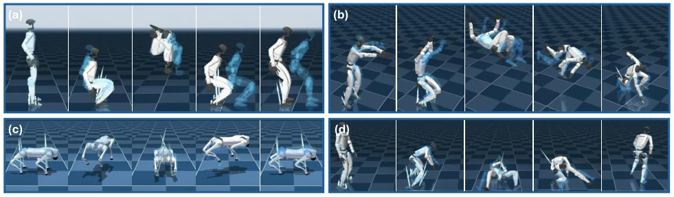
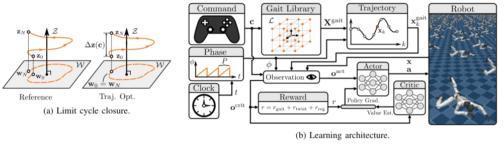
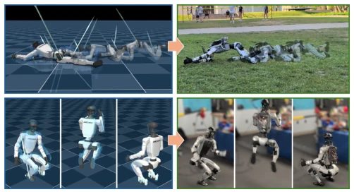
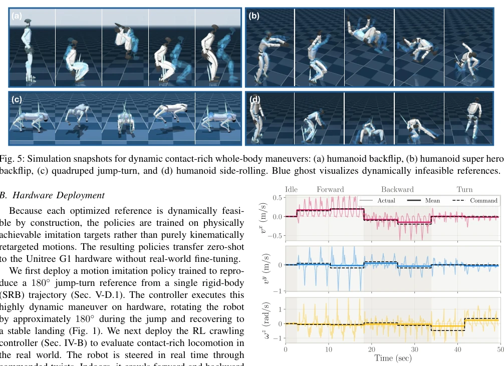
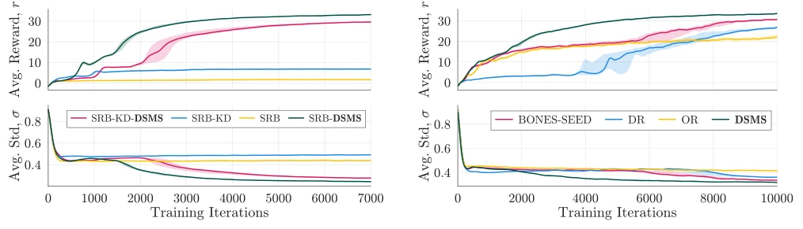
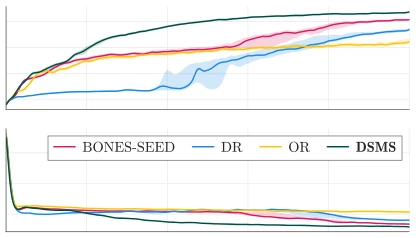

This paper feeds RL training with a "dynamic compliance" regimen, attempting to solve the physical inconsistency problem in motion retargeting. Traditional retargeting methods often prioritize ensuring kinematic similarity, yet ignore dynamic constraints, leading to generated reference trajectories containing foot sliding, penetration, or infeasible torques, forcing RL policies to not only learn actions during training but also correct physical bugs. The DSMS framework proposed by the authors cleverly embeds differentiable simulators into nonlinear programming, implicitly handling contact, friction, and collision, without requiring preset contact modes. Zero-shot transfer was achieved on Unitree G1, successfully completing crawling and 180-degree jumps. However, this method highly depends on the simulator's physical accuracy; if the simulator is inaccurate, the optimized trajectories are merely illusions of "physical correctness". Furthermore, the computational overhead brought by multiple shooting optimization cannot be ignored, potentially limiting real-time applications.
The core pain point lies in the fact that the quality of existing motion retargeting (retargeting) severely constrains the learning effect of RL policies. Most methods are based on kinematic correspondence, mapping human poses to robots, but ignore dynamic consistency [7], [8]. For contact-rich behaviors such as crawling and parkour, this kinematic mapping leads to foot sliding, ground penetration, or joint limit conflicts. Although RL can compensate for some defects, reward function tuning is extremely difficult: strong tracking rewards pull towards infeasible references, while weak rewards lead to action deviation [5], [6]. Existing dynamic optimization methods such as DynaRetarget [17] or OmniRetarget [5] often rely on preset contact modes or cannot handle arbitrary constraints. This study aims to generate reference trajectories that are physically fully feasible, allowing RL to focus only on stable control, rather than discovering feasible solutions from scratch, thereby reducing training difficulty and improving generalization.

Fig. 5: Simulation snapshots for dynamic contact-rich whole-body maneuvers: (a) humanoid backflip, (b) humanoid super hero backflip, (c) quadruped jump-turn, and (d) humanoid side-rolling. Blue ghost visualizes dynamically infeasible references.
The overall process is divided into two stages: reference generation and policy training. The DSMS optimization stage discretizes the time axis into multiple shooting nodes, state variables serve as decision variables, using the differentiable simulator's forward mapping $x_{k+1} = F(x_k, u_k)$ to connect nodes, constructing a nonlinear programming (NLP). Innovations include: 1. Implicit contact handling: no preset contact modes, utilizing the simulator's internal solution for contact forces, friction, and collision, eliminating complementarity constraints, allowing free contact switching; 2. Differentiable simulator integration: utilizing MuJoCo's gradient information to construct NLP, supporting arbitrary constraints (such as joint limits, task constraints); 3. Receding Horizon Control: adopting replanning strategies for high-dynamic actions, enhancing robustness. The cost function includes state tracking, key part tracking, and input regularization. Finally, a gait library is generated through periodic closure constraints for RL policies to call, achieving the conversion from kinematics to dynamic feasibility.

Fig. 3: (a) A gait reference is closed into a command-constrained limit cycle: the planar pose advances by ∆z(c), while w0 = wN enforces limit-cycle closure. (b) The commanded twist selects a phase-aligned gait from the library, and an asymmetric actor–critic trains a reference-free policy from proprioception, command, and phase.
Validated on Unitree G1 hardware, dataset from BONES-SEED human motion capture. Baselines include SRB, KD, OmniRetarget (OR), DynaRetarget (DR). Metrics cover landing success rate, joint/pose error. Ablation experiments show that DSMS-generated reference trajectories allow RL to converge fastest, success rate reaches 100% (compared to SRB's 0%). Hardware zero-shot transfer was successful, achieving constrained space crawling and 180-degree jumps. In comparative experiments, DSMS had the fewest convergence iterations on the "Superhero Backflip" task (approx. 2000 vs 5000), lowest tracking error. This proves the key role of dynamic feasibility references in RL training, and demonstrates sim-to-real transfer without real-world fine-tuning.

Fig. 1: DSMS trajectory optimization solutions in simulation (left) and their corresponding zero-shot hardware realizations on the Unitree G1 (right), shown for velocity-conditioned contact-rich crawling (top) and a 180◦jump-turn (bottom).

Fig. 6: Commanded (dashed), achieved body-frame instan- taneous velocity (actual), and average (mean) velocities as the crawling policy tracks forward, backward, and turning commands in one continuous run.

Fig. 7: Training performance of motions generated from the ROM ablation, with variance (shade) across seeds.

Fig. 8: Training performance of super hero backflip motion across various retargeting methods.